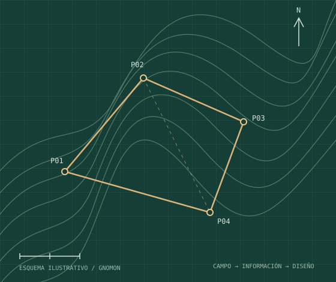

TOPOGRAFÍA DE CAMPO
Guía de nivelación
Consulta conceptos y procedimientos básicos para registrar y revisar desniveles.
Leer guía ↗APRENDE · APLICA · MEJORA
Guías prácticas, conceptos y herramientas para topografía, nivelación y diseño digital. Aprende a tu ritmo con Academia GNOMON.

BIBLIOTECA DE APRENDIZAJE
Contenido organizado para consultar desde el celular o el computador.
TOPOGRAFÍA DE CAMPO
Consulta conceptos y procedimientos básicos para registrar y revisar desniveles.
Leer guía ↗DISEÑO DIGITAL
Conoce los recursos disponibles para agilizar tareas de diseño y documentación.
Explorar recursos ↗AUTOMATIZACIÓN
Descubre herramientas que ayudan a simplificar tareas repetitivas.
Ver herramientas ↗No encontramos recursos con esos filtros. Prueba otra palabra o selecciona «Todos».
APRENDIZAJE Y HERRAMIENTAS
Complementa las guías con los productos y servicios de GNOMON Topografía.